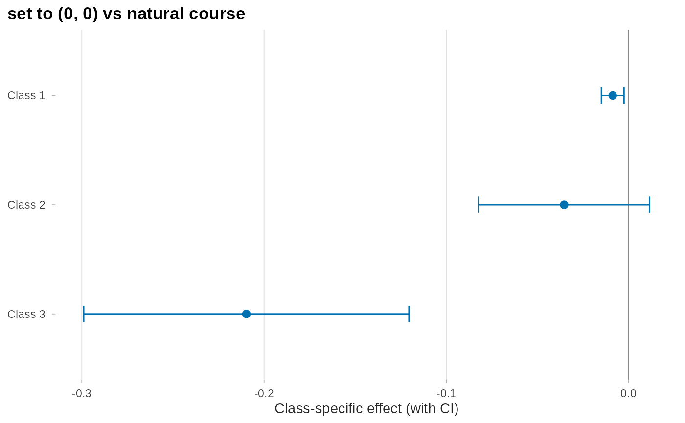

Class-specific effects of interventions on exposures
intervene_within.RdEstimates \(\psi_k = E[Y^{g_1} - Y^{g_0} \mid C = k]\), the effect of a hypothetical intervention on binary exposures within each latent class \(C\) of a latent class model of all the exposures with the confounders as covariates (e.g. "how much would preventing abuse and neglect improve health among people in the high-adversity class?").
Usage
intervene_within(
data,
outcome,
exposures,
intervene,
confounders = NULL,
g1,
g0 = natural(),
K = NULL,
model = NULL,
estimator = c("aipw", "tmle", "gformula"),
family = c("gaussian", "binomial"),
outcome_model = "linear",
propensity_model = "linear",
folds = 5,
B = 200,
seed = 1,
lca_uncertainty = c("bootstrap", "none"),
starts = c(100, 20),
boot_starts = c(30, 6),
learners = NULL,
bound = 0.01
)Arguments
- data
A data frame.
- outcome
The outcome column (tidyselect; one column). Numeric; logical or two-level factor outcomes are coded 0/1.
- exposures
The binary exposure columns (tidyselect, e.g.
ace1:ace8; 0/1, logical or two-level factors).- intervene
The exposures that are intervened on, selected among
exposures(tidyselect; 1 to 6 columns). Their order is the order of thesetto()values.- confounders
Confounder columns (tidyselect; factors are dummy-coded), or
NULL. Columns that are the outcome or exposures are dropped with a warning.- g1, g0
Interventions compared (
setto(),shift(),natural());g0defaults to the natural course.- K
Number of latent classes of the exposure model, fitted in Julia with the confounders as covariates. Alternatively give
model.- model
A fitted
latentmixtures::lca()model of theexposures(in the same order) with the confounders ascovariates, fitted to the same (complete) rows.- estimator
"aipw"(default),"tmle"or"gformula"("ipw"is not available for class-specific effects).- family
"gaussian"(continuous outcome; \(\psi\) is a mean difference) or"binomial"(0/1 outcome; \(\psi\) is a risk difference).- outcome_model, propensity_model
Working models:
"linear"or"quadratic"(see Details).- folds
Number of cross-fitting folds (1 = no cross-fitting).
- B
Bootstrap replicates (class-model bootstrap, and g-formula standard errors).
- seed
Random seed (folds and bootstrap).
- lca_uncertainty
"bootstrap"(default) or"none"(see Details).- starts
EM starts of the class model,
c(stage 1, stage 2).- boot_starts
Starts of each bootstrap refit of the class model:
c(n1, n2)random starts (defaultc(30, 6), with which the simulation coverage of the LatentClassCausal.jl documentation was obtained) or"warm"(one EM run from the full-sample estimates, about 5 times faster but with too small standard errors when classes are weakly separated; for quick exploration only).- learners
Machine-learning nuisance models. Besides
"linear"and"quadratic",outcome_modelandpropensity_modelaccept a learner fitted within the cross-fitting training folds:"lasso","lasso_quadratic","elasticnet","ridge","forest","boost"(needs EvoTrees.jl) or"superlearner". A learner for the outcome is fitted within each exposure pattern (or, with rare patterns, to the intervened exposures and \(H\) with the exposures unpenalised) and evaluated at every exposure pattern; a learner for the propensity is fitted to each link of the chain.learnersis the library of the"superlearner": learner names ("mean","glm","glm_quadratic","lasso","lasso_quadratic","elasticnet","ridge","forest","boost"), orNULLfor the default library (mean, glm, lasso, lasso_quadratic, forest).- bound
With a propensity learner, every conditional probability of the chain is bounded to
[bound, 1 - bound]. Not applied to"linear"/"quadratic".
Value
An object of class class_effects_result: a list with psi1, psi0,
effect, se, se_psi1, se_psi0 (one entry per class), class_size, se_method,
overall_effect, overall_se, overlap diagnostics min_pi, max_weight, the
class profiles profile (items x classes, P(item = 1 | class)) and the call details.
Details
With \(\tau_{ik} = P(C = k \mid A_i, X_i)\) the posterior class probabilities and
\(\phi_{1i}, \phi_{0i}\) the per-observation contributions of intervene_effect()
(AIPW/TMLE/g-formula), \(\hat\psi_k = \sum_i \tau_{ik}(\phi_{1i} - \phi_{0i}) /
\sum_i \tau_{ik}\). The class-size weighted average of the \(\psi_k\) is the population
effect.
Identification. The assumptions of intervene_effect() and \(Y^g \perp C \mid
A, X\): given the exposures and confounders, the class carries no further information
about the outcome (no direct class effect; see intervene_latent_sensitivity()). The estimator is
consistent when the outcome model is correct; unlike the population effect it is not
doubly robust. The latent class model must hold (local independence; covariates act on
class membership only).
Standard errors. lca_uncertainty = "bootstrap" (default): nonparametric bootstrap
refitting the class model (classes aligned to the original) and the nuisance models, B
replicates, in parallel over the Julia threads. "none": influence function of the
ratio, holding the class and nuisance models fixed; in the simulation its median
coverage was 0.91 (as low as 0.64 for small, poorly separated classes).
How to use
Fit the class model of all exposures with the confounders as covariates once,
mA <- latentmixtures::lca(data, ace1:ace8, K = 3, covariates = c(...)), check its convergence and name the classes fromce$profileor the item-response probabilities.Define the intervention and estimate the population effect with
intervene_effect()first.Run
intervene_within(data, outcome, exposures, intervene, confounders, g1 = ..., model = mA)with the default bootstrap (lca_uncertainty = "bootstrap",B = 200);lca_uncertainty = "none"only for a quick look.\(\psi_k\) is not doubly robust: rerun with
outcome_model = "quadratic"(or a learner) and compare.Probe the assumption of no direct class effect with
intervene_latent_sensitivity()(samemodel). Seevignette("function-guide").
Examples
# \donttest{
data(ace_study)
# Question: is preventing abuse and neglect (ace1, ace2) worth more for adults from
# high-adversity family contexts?
# 1. class model of all eight ACEs with the confounders as covariates (fit once, reuse)
mA <- latentmixtures::lca(ace_study, ace1:ace8, K = 3, covariates = c(age, female, parent_edu))
#> Starting Julia ...
latentmixtures::convergence(mA)
#> Convergence check: ✓ no problems found
#> best start converged yes (347 EM iterations)
#> stage-2 starts converged 20 / 20
#> best LL replicated 20 times
#> LL at EM / after Newton -8255.7234 / -8255.7234 (gain 0.0e+00; max |gradient| 5.1e-09)
#> smallest class 0.096
#> · EM stopped with a large gradient (max |gradient| 2.0e-01); 2 Newton steps from the EM estimates raised the log-likelihood by 0.0000 (max |gradient| now 5.1e-09), as Mplus switches from EM to quasi-Newton; the reported solution is the Newton one
round(sapply(latentmixtures::itemprobs(mA), function(p) p["1", ]), 2)
#> ace1 ace2 ace3 ace4 ace5 ace6 ace7 ace8
#> class1 0.08 0.05 0.03 0.06 0.08 0.08 0.18 0.02
#> class2 0.23 0.25 0.06 0.47 0.57 0.49 0.54 0.24
#> class3 0.83 0.54 0.42 0.50 0.51 0.33 0.51 0.17
# classes: 1 low adversity (67\%), 2 household dysfunction (23\%),
# 3 high adversity with maltreatment (9.6\%; abuse 0.83, neglect 0.54)
# 2. class-specific effects on depression (B = 50 bootstrap replicates for speed;
# use the default B = 200 for a paper)
ce <- intervene_within(ace_study, outcome = depressed, exposures = ace1:ace8,
intervene = c(ace1, ace2), confounders = c(age, female, parent_edu),
g1 = setto(c(0, 0)), model = mA, family = "binomial", B = 50)
#> class-model bootstrap: 50 replicates on 4 thread(s)…
#> bootstrap 5/50 (10%), about 35 s left
#> bootstrap 10/50 (20%), about 25 s left
#> bootstrap 15/50 (30%), about 19 s left
#> bootstrap 20/50 (40%), about 15 s left
#> bootstrap 25/50 (50%), about 12 s left
#> bootstrap 30/50 (60%), about 9 s left
#> bootstrap 35/50 (70%), about 8 s left
#> bootstrap 40/50 (80%), about 5 s left
#> bootstrap 45/50 (90%), about 2 s left
#> bootstrap 50/50 (100%), done in 25 s
ce
#> ▸ Class-specific effects of a hypothetical intervention on exposures
#> g1: set to (0, 0)
#> g0: natural course
#> aipw; N = 2500, K = 3; outcome depressed
#>
#> ─────────────────────────────────────────────────────────────────────────────
#> P(C=k) E[Y^g1|k] E[Y^g0|k] psi_k SE 95% CI p
#> ─────────────────────────────────────────────────────────────────────────────
#> Class 1 0.674 0.120 0.129 −0.009 0.003 [−0.015, −0.003] .006
#> Class 2 0.230 0.153 0.188 −0.035 0.024 [−0.082, 0.012] .139
#> Class 3 0.096 0.136 0.345 −0.210 0.046 [−0.299, −0.120] <.001
#> ─────────────────────────────────────────────────────────────────────────────
#>
#> Population effect: −0.034 (SE 0.007); overlap: min pi = 0.0050, max weight = 10.1
#> Assumes no direct class effect on the outcome (Y^g independent of C given A, X).
#> SE: bootstrap (50 replicates)
# psi_3 = -0.210: in the high-adversity class prevention would lower depression risk
# from 34.5\% to 13.6\%; psi_1 = -0.009 in the low-adversity class. The class-size
# weighted average is the population effect, -0.034.
tidy(ce)
#> term class estimate std.error statistic p.value conf.low
#> 1 Class 1 1 -0.008711088 0.003165955 -2.751488 5.932513e-03 -0.01491625
#> 2 Class 2 2 -0.035375532 0.023923153 -1.478715 1.392164e-01 -0.08226405
#> 3 Class 3 3 -0.209725063 0.045525499 -4.606760 4.089909e-06 -0.29895340
#> conf.high class_size psi1 psi1.std.error psi0 psi0.std.error
#> 1 -0.00250593 0.6743870 0.1200274 0.007306705 0.1287385 0.006849954
#> 2 0.01151299 0.2299566 0.1530958 0.021856210 0.1884713 0.020264552
#> 3 -0.12049673 0.0956564 0.1356798 0.021265324 0.3454049 0.048429242
autoplot(ce)

# }